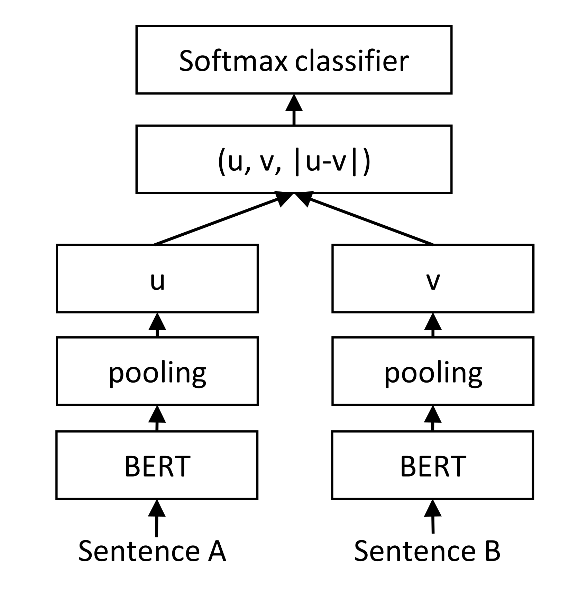
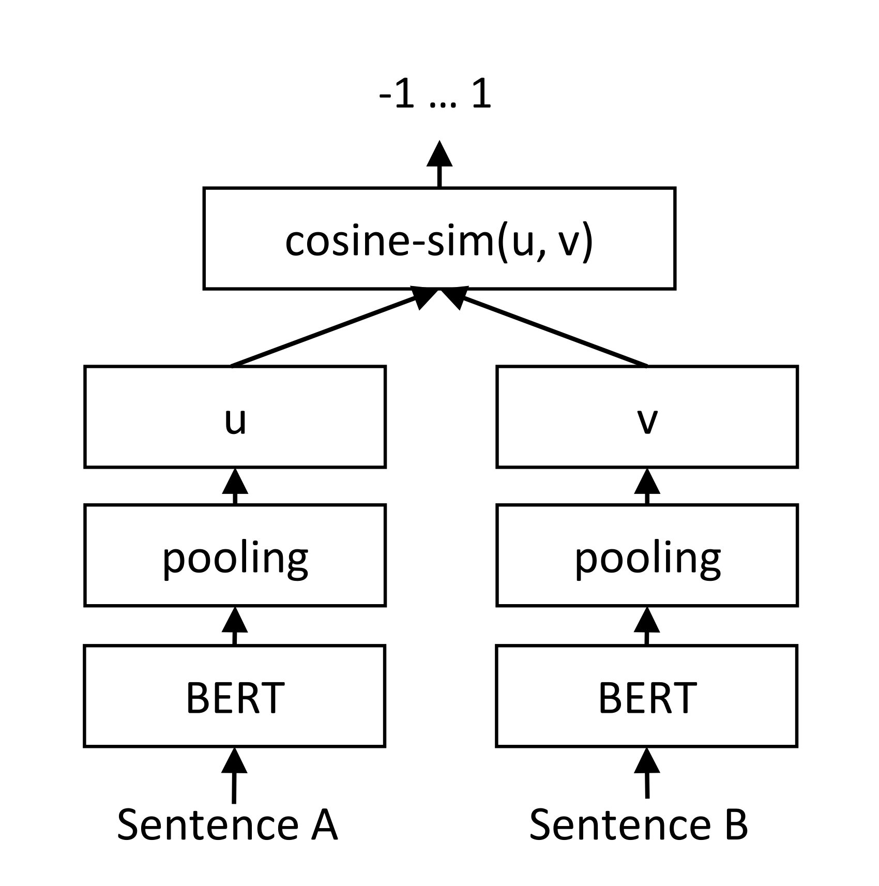

Sentence-BERT: Sentence Embeddings using Siamese BERT-Networks / 全文中英对照¶
来源：arXiv:1908.10084v1。英文段落后紧接中文，覆盖所取 HTML 版本的主文、附录、图表、脚注与参考文献；公式、数字表和书目信息共用。中文以机器初译为底稿，进行了术语整理与结构核对，尚未逐句人工审定；遇到歧义请以紧邻英文和原论文为准。 原作版权归所列作者，许可见 原作许可；中文译文与版式改写在该许可条件下提供（涉及 SA 时沿用相同许可，涉及 NC 时仅限非商业使用）。
Authors and affiliations / 作者与机构¶
Nils Reimers Iryna Gurevych Affiliation: Ubiquitous Knowledge Processing Lab (UKP-TUDA) Affiliation: Department of Computer Science, Technische Universität Darmstadt Affiliation: www.ukp.tu-darmstadt.de
Abstract / 摘要¶
EN. BERT Devlin et al. (2018) and RoBERTa Liu et al. (2019) has set a new state-of-the-art performance on sentence-pair regression tasks like semantic textual similarity (STS). However, it requires that both sentences are fed into the network, which causes a massive computational overhead: Finding the most similar pair in a collection of 10,000 sentences requires about 50 million inference computations (~65 hours) with BERT. The construction of BERT makes it unsuitable for semantic similarity search as well as for unsupervised tasks like clustering.
中. 伯特·德夫林 (BERT Devlin) 等人(2018) 和 RoBERTa Liu 等人。 (2019) 在语义文本相似度 (STS) 等句子对回归任务上创下了新的最先进性能。然而，它需要将两个句子都输入网络，这会导致巨大的计算开销：使用 BERT 在 10,000 个句子的集合中找到最相似的一对需要大约 5000 万次推理计算（约 65 小时）。 BERT 的构造使其不适合语义相似性搜索以及聚类等无监督任务。
EN. In this publication, we present Sentence-BERT (SBERT), a modification of the pretrained BERT network that use siamese and triplet network structures to derive semantically meaningful sentence embeddings that can be compared using cosine-similarity. This reduces the effort for finding the most similar pair from 65 hours with BERT / RoBERTa to about 5 seconds with SBERT, while maintaining the accuracy from BERT.
中. 在本出版物中，我们提出了 Sentence-BERT (SBERT)，这是对预训练 BERT 网络的修改，它使用连体和三元组网络结构来导出语义上有意义的句子嵌入，可以使用余弦相似度进行比较。这减少了寻找最相似对的工作量，从使用 BERT / RoBERTa 的 65 小时减少到使用 SBERT 的大约 5 秒，同时保持了 BERT 的准确性。
EN. We evaluate SBERT and SRoBERTa on common STS tasks and transfer learning tasks, where it outperforms other state-of-the-art sentence embeddings methods. 1
中. 我们在常见的 STS 任务和迁移学习任务上评估了 SBERT 和 SRoBERTa，它的性能优于其他最先进的句子嵌入方法。 1
Introduction / 简介¶
EN. In this publication, we present Sentence-BERT (SBERT), a modification of the BERT network using siamese and triplet networks that is able to derive semantically meaningful sentence embeddings 2 . This enables BERT to be used for certain new tasks, which up-to-now were not applicable for BERT. These tasks include large-scale semantic similarity comparison, clustering, and information retrieval via semantic search.
中. 在本出版物中，我们提出了 Sentence-BERT (SBERT)，它是使用孪生网络和三元组网络对 BERT 网络进行的修改，能够导出语义上有意义的句子嵌入 2 。这使得 BERT 能够用于某些新任务，而这些任务迄今为止并不适用于 BERT。这些任务包括大规模语义相似性比较、聚类和通过语义搜索进行信息检索。
EN. BERT set new state-of-the-art performance on various sentence classification and sentence-pair regression tasks. BERT uses a cross-encoder: Two sentences are passed to the transformer network and the target value is predicted. However, this setup is unsuitable for various pair regression tasks due to too many possible combinations. Finding in a collection of \(n=10\,000\) sentences the pair with the highest similarity requires with BERT \(n\cdot(n-1)/2=49\,995\,000\) inference computations. On a modern V100 GPU, this requires about 65 hours. Similar, finding which of the over 40 million existent questions of Quora is the most similar for a new question could be modeled as a pair-wise comparison with BERT, however, answering a single query would require over 50 hours.
中. BERT 在各种句子分类和句子对回归任务上树立了新的最先进性能。 BERT 使用交叉编码器：将两个句子传递到 Transformer 网络并预测目标值。然而，由于可能的组合太多，这种设置不适合各种配对回归任务。在 \(n=10\,000\) 句子集合中查找相似度最高的一对需要使用 BERT \(n\cdot(n-1)/2=49\,995\,000\) 推理计算。在现代 V100 GPU 上，这需要大约 65 小时。类似地，找到 Quora 超过 4000 万个现有问题中哪一个与新问题最相似，可以建模为与 BERT 的成对比较，但是，回答单个查询将需要 50 多个小时。
EN. A common method to address clustering and semantic search is to map each sentence to a vector space such that semantically similar sentences are close. Researchers have started to input individual sentences into BERT and to derive fixed-size sentence embeddings. The most commonly used approach is to average the BERT output layer (known as BERT embeddings) or by using the output of the first token (the [CLS] token). As we will show, this common practice yields rather bad sentence embeddings, often worse than averaging GloVe embeddings Pennington et al. (2014) .
中. 解决聚类和语义搜索的常见方法是将每个句子映射到向量空间，以使语义相似的句子接近。研究人员已经开始将单个句子输入 BERT 并导出固定大小的句子嵌入。最常用的方法是对 BERT 输出层（称为 BERT 嵌入）进行平均或使用第一个令牌（[CLS] 令牌）的输出。正如我们将要展示的，这种常见做法会产生相当糟糕的句子嵌入，通常比 Pennington 等人的平均 GloVe 嵌入更糟糕。 （2014）。
EN. To alleviate this issue, we developed SBERT. The siamese network architecture enables that fixed-sized vectors for input sentences can be derived. Using a similarity measure like cosine-similarity or Manhatten / Euclidean distance, semantically similar sentences can be found. These similarity measures can be performed extremely efficient on modern hardware, allowing SBERT to be used for semantic similarity search as well as for clustering. The complexity for finding the most similar sentence pair in a collection of 10,000 sentences is reduced from 65 hours with BERT to the computation of 10,000 sentence embeddings (~5 seconds with SBERT) and computing cosine-similarity (~0.01 seconds). By using optimized index structures, finding the most similar Quora question can be reduced from 50 hours to a few milliseconds Johnson et al. (2017) .
中. 为了缓解这个问题，我们开发了 SBERT。暹罗网络架构使得可以导出输入句子的固定大小的向量。使用余弦相似度或曼哈顿/欧几里德距离等相似性度量，可以找到语义相似的句子。这些相似性测量可以在现代硬件上极其高效地执行，从而允许 SBERT 用于语义相似性搜索以及聚类。在 10,000 个句子的集合中查找最相似的句子对的复杂性从使用 BERT 的 65 小时减少到计算 10,000 个句子嵌入（使用 SBERT 约 5 秒）和计算余弦相似度（约 0.01 秒）。通过使用优化的索引结构，查找最相似的 Quora 问题可以从 50 小时缩短到几毫秒 Johnson 等人。 （2017）。
EN. We fine-tune SBERT on NLI data, which creates sentence embeddings that significantly outperform other state-of-the-art sentence embedding methods like InferSent Conneau et al. (2017) and Universal Sentence Encoder Cer et al. (2018) . On seven Semantic Textual Similarity (STS) tasks, SBERT achieves an improvement of 11.7 points compared to InferSent and 5.5 points compared to Universal Sentence Encoder. On SentEval Conneau and Kiela (2018) , an evaluation toolkit for sentence embeddings, we achieve an improvement of 2.1 and 2.6 points, respectively.
中. 我们在 NLI 数据上对 SBERT 进行微调，这创建的句子嵌入明显优于 InferSent Conneau 等其他最先进的句子嵌入方法。 (2017) 和 Universal Sentence Encoder Cer 等人。 （2018）。在七个语义文本相似性 (STS) 任务中，SBERT 与 InferSent 相比提高了 11.7 分，与 Universal Sentence Encoder 相比提高了 5.5 分。在句子嵌入评估工具包 SentEval Conneau 和 Kiela (2018) 上，我们分别实现了 2.1 和 2.6 点的改进。
EN. SBERT can be adapted to a specific task. It sets new state-of-the-art performance on a challenging argument similarity dataset Misra et al. (2016) and on a triplet dataset to distinguish sentences from different sections of a Wikipedia article Dor et al. (2018) .
中. SBERT 可以适应特定任务。它在具有挑战性的论证相似性数据集 Misra 等人上设置了新的最先进性能。 (2016) 并在三元组数据集上区分来自维基百科文章 Dor 等人的不同部分的句子。 （2018）。
EN. The paper is structured in the following way: Section 3 presents SBERT, section 4 evaluates SBERT on common STS tasks and on the challenging Argument Facet Similarity (AFS) corpus Misra et al. (2016) . Section 5 evaluates SBERT on SentEval. In section 6 , we perform an ablation study to test some design aspect of SBERT. In section 7 , we compare the computational efficiency of SBERT sentence embeddings in contrast to other state-of-the-art sentence embedding methods.
中. 本文的结构如下：第 3 节介绍 SBERT，第 4 节评估 SBERT 在常见 STS 任务和具有挑战性的论证方面相似性 (AFS) 语料库 Misra 等人上的表现。 （2016）。第 5 节在 SentEval 上评估 SBERT。在第 6 节中，我们进行了消融研究来测试 SBERT 的某些设计方面。在第 7 节中，我们比较了 SBERT 句子嵌入与其他最先进的句子嵌入方法的计算效率。
Related Work / 相关工作¶
EN. We first introduce BERT, then, we discuss state-of-the-art sentence embedding methods.
中. 我们首先介绍 BERT，然后讨论最先进的句子嵌入方法。
EN. BERT Devlin et al. (2018) is a pre-trained transformer network Vaswani et al. (2017) , which set for various NLP tasks new state-of-the-art results, including question answering, sentence classification, and sentence-pair regression. The input for BERT for sentence-pair regression consists of the two sentences, separated by a special [SEP] token. Multi-head attention over 12 (base-model) or 24 layers (large-model) is applied and the output is passed to a simple regression function to derive the final label. Using this setup, BERT set a new state-of-the-art performance on the Semantic Textual Semilarity (STS) benchmark Cer et al. (2017) . RoBERTa Liu et al. (2019) showed, that the performance of BERT can further improved by small adaptations to the pre-training process. We also tested XLNet Yang et al. (2019) , but it led in general to worse results than BERT.
中. 伯特·德夫林 (BERT Devlin) 等人(2018) 是 Vaswani 等人的预训练Transformer网络。 (2017)，它为各种 NLP 任务设定了新的最先进的结果，包括问答、句子分类和句子对回归。用于句子对回归的 BERT 输入由两个句子组成，由特殊的 [SEP] 标记分隔。应用超过 12 层（基本模型）或 24 层（大型模型）的多头注意力，并将输出传递给简单的回归函数以导出最终标签。使用此设置，BERT 在语义文本半相关性 (STS) 基准 Cer 等人上创下了新的最先进性能。 （2017）。罗伯塔刘等人。 （2019）表明，通过对预训练过程进行小的调整可以进一步提高 BERT 的性能。我们还测试了 XLNet Yang 等人。 (2019)，但它总体上导致比 BERT 更糟糕的结果。
EN. A large disadvantage of the BERT network structure is that no independent sentence embeddings are computed, which makes it difficult to derive sentence embeddings from BERT. To bypass this limitations, researchers passed single sentences through BERT and then derive a fixed sized vector by either averaging the outputs (similar to average word embeddings) or by using the output of the special CLS token (for example: May et al. (2019) ; Zhang et al. (2019) ; Qiao et al. (2019) ). These two options are also provided by the popular bert-as-a-service-repository 3 . Up to our knowledge, there is so far no evaluation if these methods lead to useful sentence embeddings.
中. BERT网络结构的一大缺点是没有计算独立的句子嵌入，这使得从BERT导出句子嵌入变得困难。为了绕过这个限制，研究人员通过 BERT 传递单个句子，然后通过平均输出（类似于平均词嵌入）或使用特殊 CLS 标记的输出来导出固定大小的向量（例如：May et al. (2019) ；Zhang et al. (2019) ；Qiao et al. (2019) ）。流行的 bert-as-a-service-repository 3 也提供了这两个选项。据我们所知，到目前为止，还没有评估这些方法是否会产生有用的句子嵌入。
EN. Sentence embeddings are a well studied area with dozens of proposed methods. Skip-Thought Kiros et al. (2015) trains an encoder-decoder architecture to predict the surrounding sentences. InferSent Conneau et al. (2017) uses labeled data of the Stanford Natural Language Inference dataset Bowman et al. (2015) and the Multi-Genre NLI dataset Williams et al. (2018) to train a siamese BiLSTM network with max-pooling over the output. Conneau et al. showed, that InferSent consistently outperforms unsupervised methods like SkipThought. Universal Sentence Encoder Cer et al. (2018) trains a transformer network and augments unsupervised learning with training on SNLI. Hill et al. (2016) showed, that the task on which sentence embeddings are trained significantly impacts their quality. Previous work Conneau et al. (2017) ; Cer et al. (2018) found that the SNLI datasets are suitable for training sentence embeddings. Yang et al. (2018) presented a method to train on conversations from Reddit using siamese DAN and siamese transformer networks, which yielded good results on the STS benchmark dataset.
中. 句子嵌入是一个经过深入研究的领域，提出了数十种方法。跳过思想 Kiros 等人。 (2015) 训练编码器-解码器架构来预测周围的句子。 InferSent Conneau 等人。 (2017) 使用斯坦福自然语言推理数据集 Bowman 等人的标记数据。 (2015) 和多流派 NLI 数据集 Williams 等人。 (2018) 训练一个具有输出最大池化的孪生 BiLSTM 网络。康诺等人。结果表明，InferSent 始终优于 SkipThought 等无监督方法。通用句子编码器 Cer 等。 (2018) 训练Transformer网络并通过 SNLI 训练增强无监督学习。希尔等人。 （2016）表明，训练句子嵌入的任务会显着影响其质量。 Conneau 等人之前的工作。 (2017);塞尔等人。 (2018) 发现 SNLI 数据集适合训练句子嵌入。杨等人。 (2018) 提出了一种使用暹罗 DAN 和暹罗 Transformer 网络训练 Reddit 对话的方法，该方法在 STS 基准数据集上取得了良好的结果。
EN. Humeau et al. (2019) addresses the run-time overhead of the cross-encoder from BERT and present a method (poly-encoders) to compute a score between \(m\) context vectors and pre-computed candidate embeddings using attention. This idea works for finding the highest scoring sentence in a larger collection. However, poly-encoders have the drawback that the score function is not symmetric and the computational overhead is too large for use-cases like clustering, which would require \(O(n^{2})\) score computations.
中. 休莫等人。 (2019) 解决了 BERT 交叉编码器的运行时开销，并提出了一种方法（多编码器）来计算 \(m\) 上下文向量和使用注意力机制预先计算的候选嵌入之间的分数。这个想法适用于在更大的集合中找到得分最高的句子。然而，多编码器的缺点是分数函数不对称，并且对于聚类等用例来说计算开销太大，这需要 \(O(n^{2})\) 分数计算。
EN. Previous neural sentence embedding methods started the training from a random initialization. In this publication, we use the pre-trained BERT and RoBERTa network and only fine-tune it to yield useful sentence embeddings. This reduces significantly the needed training time: SBERT can be tuned in less than 20 minutes, while yielding better results than comparable sentence embedding methods.
中. 以前的神经句子嵌入方法是从随机初始化开始训练的。在本出版物中，我们使用预先训练的 BERT 和 RoBERTa 网络，并且仅对其进行微调以产生有用的句子嵌入。这显着减少了所需的训练时间：SBERT 可以在不到 20 分钟的时间内完成调整，同时比类似的句子嵌入方法产生更好的结果。
Model / 型号¶

EN. Figure 1: SBERT architecture with classification objective function, e.g., for fine-tuning on SNLI dataset. The two BERT networks have tied weights (siamese network structure).
中. 图 1：具有分类目标函数的 SBERT 架构，例如用于在 SNLI 数据集上进行微调。两个 BERT 网络具有绑定权重（连体网络结构）。
EN. SBERT adds a pooling operation to the output of BERT / RoBERTa to derive a fixed sized sentence embedding. We experiment with three pooling strategies: Using the output of the CLS -token, computing the mean of all output vectors ( MEAN -strategy), and computing a max-over-time of the output vectors ( MAX -strategy). The default configuration is MEAN .
中. SBERT 在 BERT / RoBERTa 的输出中添加了池化操作，以导出固定大小的句子嵌入。我们尝试了三种池化策略：使用 CLS 令牌的输出，计算所有输出向量的平均值（MEAN 策略），并计算输出向量的最大随时间变化（MAX 策略）。默认配置是 MEAN 。
EN. In order to fine-tune BERT / RoBERTa, we create siamese and triplet networks Schroff et al. (2015) to update the weights such that the produced sentence embeddings are semantically meaningful and can be compared with cosine-similarity.
中. 为了微调 BERT / RoBERTa，我们创建了孪生网络和三元组网络 Schroff 等人。 （2015）更新权重，使得生成的句子嵌入在语义上有意义并且可以与余弦相似度进行比较。
EN. The network structure depends on the available training data. We experiment with the following structures and objective functions.
中. 网络结构取决于可用的训练数据。我们尝试以下结构和目标函数。
EN. Classification Objective Function. We concatenate the sentence embeddings \(u\) and \(v\) with the element-wise difference \(|u-v|\) and multiply it with the trainable weight \(W_{t}\in\mathbb{R}^{3n\times k}\) :
中. 分类目标函数。我们将句子嵌入 \(u\) 和 \(v\) 与元素差异 \(|u-v|\) 连接起来，并将其乘以可训练权重 \(W_{t}\in\mathbb{R}^{3n\times k}\) ：
EN. where \(n\) is the dimension of the sentence embeddings and \(k\) the number of labels. We optimize cross-entropy loss. This structure is depicted in Figure 1 .
中. 其中 \(n\) 是句子嵌入的维度，\(k\) 是标签的数量。我们优化交叉熵损失。该结构如图 1 所示。
EN. Regression Objective Function. The cosine-similarity between the two sentence embeddings \(u\) and \(v\) is computed (Figure 2 ). We use mean-squared-error loss as the objective function.
中. 回归目标函数。计算两个句子嵌入 \(u\) 和 \(v\) 之间的余弦相似度（图 2）。我们使用均方误差损失作为目标函数。

EN. Figure 2: SBERT architecture at inference, for example, to compute similarity scores. This architecture is also used with the regression objective function.
中. 图 2：例如，用于计算相似性分数的推理中的 SBERT 架构。该架构还与回归目标函数一起使用。
EN. Triplet Objective Function. Given an anchor sentence \(a\) , a positive sentence \(p\) , and a negative sentence \(n\) , triplet loss tunes the network such that the distance between \(a\) and \(p\) is smaller than the distance between \(a\) and \(n\) . Mathematically, we minimize the following loss function:
中. 三重目标函数。给定一个锚句子 \(a\) 、一个肯定句子 \(p\) 和一个否定句子 \(n\) ，三元组损失对网络进行调整，使得 \(a\) 和 \(p\) 之间的距离小于 \(a\) 和 \(n\) 之间的距离。从数学上讲，我们最小化以下损失函数：
EN. with \(s_{x}\) the sentence embedding for \(a\) / \(n\) / \(p\) , \(||\cdot||\) a distance metric and margin \(\epsilon\) . Margin \(\epsilon\) ensures that \(s_{p}\) is at least \(\epsilon\) closer to \(s_{a}\) than \(s_{n}\) . As metric we use Euclidean distance and we set \(\epsilon=1\) in our experiments.
中. 和\(s_{x}\)句子嵌入为\(a\)/\(n\)/\(p\),\(||\cdot||\)距离度量和边距\(\epsilon\)。利润\(\epsilon\)确保\(s_{p}\)至少是\(\epsilon\)更接近\(s_{a}\)比\(s_{n}\)。作为度量，我们使用欧几里德距离，并且我们设置\(\epsilon=1\)在我们的实验中。
| Model 型号 |
STS12 | STS13 | STS14 | STS15 | STS16 | STSb | SICK-R | Avg. 平均。 |
|---|---|---|---|---|---|---|---|---|
| Avg. GloVe embeddings 平均。手套嵌入 |
55.14 | 70.66 | 59.73 | 68.25 | 63.66 | 58.02 | 53.76 | 61.32 |
| Avg. BERT embeddings 平均。 BERT 嵌入 |
38.78 | 57.98 | 57.98 | 63.15 | 61.06 | 46.35 | 58.40 | 54.81 |
| BERT CLS-vector BERT CLS-向量 |
20.16 | 30.01 | 20.09 | 36.88 | 38.08 | 16.50 | 42.63 | 29.19 |
| InferSent - Glove InferSent - 手套 |
52.86 | 66.75 | 62.15 | 72.77 | 66.87 | 68.03 | 65.65 | 65.01 |
| Universal Sentence Encoder 通用句子编码器 |
64.49 | 67.80 | 64.61 | 76.83 | 73.18 | 74.92 | 76.69 | 71.22 |
| SBERT-NLI-base SBERT-NLI-基础 |
70.97 | 76.53 | 73.19 | 79.09 | 74.30 | 77.03 | 72.91 | 74.89 |
| SBERT-NLI-large SBERT-NLI-大型 |
72.27 | 78.46 | 74.90 | 80.99 | 76.25 | 79.23 | 73.75 | 76.55 |
| SRoBERTa-NLI-base SRoBERTa-NLI-基 |
71.54 | 72.49 | 70.80 | 78.74 | 73.69 | 77.77 | 74.46 | 74.21 |
| SRoBERTa-NLI-large SRoBERTa-NLI-大型 |
74.53 | 77.00 | 73.18 | 81.85 | 76.82 | 79.10 | 74.29 | 76.68 |
EN. Table 1: Spearman rank correlation \(\rho\) between the cosine similarity of sentence representations and the gold labels for various Textual Similarity (STS) tasks. Performance is reported by convention as \(\rho\times 100\) . STS12-STS16: SemEval 2012-2016, STSb: STSbenchmark, SICK-R: SICK relatedness dataset.
中. 表 1：句子表示的余弦相似性与各种文本相似性 (STS) 任务的黄金标签之间的斯皮尔曼等级相关性 \(\rho\)。按照惯例，性能报告为 \(\rho\times 100\) 。 STS12-STS16：SemEval 2012-2016，STSb：STSbenchmark，SICK-R：SICK 相关性数据集。
Training Details / 培训详情¶
EN. We train SBERT on the combination of the SNLI Bowman et al. (2015) and the Multi-Genre NLI Williams et al. (2018) dataset. The SNLI is a collection of 570,000 sentence pairs annotated with the labels contradiction , eintailment , and neutral . MultiNLI contains 430,000 sentence pairs and covers a range of genres of spoken and written text. We fine-tune SBERT with a 3-way softmax-classifier objective function for one epoch. We used a batch-size of 16, Adam optimizer with learning rate \(2\mathrm{e}{-5}\) , and a linear learning rate warm-up over 10% of the training data. Our default pooling strategy is MEAN .
中. 我们结合 SNLI Bowman 等人的方法来训练 SBERT。 (2015) 和多流派 NLI Williams 等人。 （2018）数据集。 SNLI 是 570,000 个句子对的集合，带有矛盾、内含和中性标签注释。 MultiNLI 包含 430,000 个句子对，涵盖一系列口语和书面文本类型。我们使用 3 路 softmax 分类器目标函数对一个 epoch 的 SBERT 进行微调。我们使用了 16 的批量大小、学习率为 \(2\mathrm{e}{-5}\) 的 Adam 优化器以及超过 10% 训练数据的线性学习率预热。我们的默认池化策略是 MEAN 。
Evaluation - Semantic Textual Similarity / 评估-语义文本相似度¶
EN. We evaluate the performance of SBERT for common Semantic Textual Similarity (STS) tasks. State-of-the-art methods often learn a (complex) regression function that maps sentence embeddings to a similarity score. However, these regression functions work pair-wise and due to the combinatorial explosion those are often not scalable if the collection of sentences reaches a certain size. Instead, we always use cosine-similarity to compare the similarity between two sentence embeddings. We ran our experiments also with negative Manhatten and negative Euclidean distances as similarity measures, but the results for all approaches remained roughly the same.
中. 我们评估了 SBERT 在常见语义文本相似性 (STS) 任务中的性能。最先进的方法通常学习一个（复杂的）回归函数，将句子嵌入映射到相似度分数。然而，这些回归函数是成对工作的，并且由于组合爆炸，如果句子集合达到一定大小，这些回归函数通常无法扩展。相反，我们总是使用余弦相似度来比较两个句子嵌入之间的相似度。我们还使用负曼哈顿距离和负欧几里德距离作为相似性度量来进行实验，但所有方法的结果仍然大致相同。
Unsupervised STS / 无监督STS¶
EN. We evaluate the performance of SBERT for STS without using any STS specific training data. We use the STS tasks 2012 - 2016 Agirre et al. (2012) ; Agirre et al. (2013) ; Agirre et al. (2014) ; Agirre et al. (2015) ; Agirre et al. (2016) , the STS benchmark Cer et al. (2017) , and the SICK-Relatedness dataset Marelli et al. (2014) . These datasets provide labels between 0 and 5 on the semantic relatedness of sentence pairs. We showed in Reimers et al. (2016) that Pearson correlation is badly suited for STS. Instead, we compute the Spearman’s rank correlation between the cosine-similarity of the sentence embeddings and the gold labels. The setup for the other sentence embedding methods is equivalent, the similarity is computed by cosine-similarity. The results are depicted in Table 1 .
中. 我们在不使用任何 STS 特定训练数据的情况下评估 SBERT for STS 的性能。我们使用 Agirre 等人 2012 - 2016 年的 STS 任务。 (2012);阿吉尔等人。 (2013);阿吉尔等人。 (2014);阿吉尔等人。 (2015);阿吉尔等人。 (2016)，STS 基准 Cer 等人。 (2017) 和 SICK-Relatedness 数据集 Marelli 等人。 （2014）。这些数据集为句子对的语义相关性提供 0 到 5 之间的标签。我们在 Reimers 等人中展示了。 (2016) 认为 Pearson 相关性非常适合 STS。相反，我们计算句子嵌入和黄金标签的余弦相似度之间的斯皮尔曼等级相关性。其他句子嵌入方法的设置是等效的，相似度通过余弦相似度计算。结果如表1所示。
EN. The results shows that directly using the output of BERT leads to rather poor performances. Averaging the BERT embeddings achieves an average correlation of only 54.81, and using the CLS -token output only achieves an average correlation of 29.19. Both are worse than computing average GloVe embeddings.
中. 结果表明，直接使用 BERT 的输出会导致性能相当差。对 BERT 嵌入进行平均仅实现 54.81 的平均相关性，而使用 CLS 令牌输出仅实现 29.19 的平均相关性。两者都比计算平均 GloVe 嵌入要差。
EN. Using the described siamese network structure and fine-tuning mechanism substantially improves the correlation, outperforming both InferSent and Universal Sentence Encoder substantially. The only dataset where SBERT performs worse than Universal Sentence Encoder is SICK-R. Universal Sentence Encoder was trained on various datasets, including news, question-answer pages and discussion forums, which appears to be more suitable to the data of SICK-R. In contrast, SBERT was pre-trained only on Wikipedia (via BERT) and on NLI data.
中. 使用所描述的孪生网络结构和微调机制大大提高了相关性，大大优于 InferSent 和通用句子编码器。 SBERT 表现比通用句子编码器差的唯一数据集是 SICK-R。 Universal Sentence Encoder 在各种数据集上进行了训练，包括新闻、问答页面和讨论论坛，这似乎更适合 SICK-R 的数据。相比之下，SBERT 仅在维基百科（通过 BERT）和 NLI 数据上进行了预训练。
EN. While RoBERTa was able to improve the performance for several supervised tasks, we only observe minor difference between SBERT and SRoBERTa for generating sentence embeddings.
中. 虽然 RoBERTa 能够提高多个监督任务的性能，但我们在生成句子嵌入方面仅观察到 SBERT 和 SRoBERTa 之间的微小差异。
Supervised STS / 监督式STS¶
EN. The STS benchmark (STSb) Cer et al. (2017) provides is a popular dataset to evaluate supervised STS systems. The data includes 8,628 sentence pairs from the three categories captions , news , and forums . It is divided into train (5,749), dev (1,500) and test (1,379). BERT set a new state-of-the-art performance on this dataset by passing both sentences to the network and using a simple regression method for the output.
中. STS 基准 (STSb) Cer 等人。 (2017) 提供了一个用于评估监督 STS 系统的流行数据集。该数据包括来自字幕、新闻和论坛三个类别的 8,628 个句子对。分为train（5,749）、dev（1,500）和test（1,379）。 BERT 通过将两个句子传递到网络并使用简单的回归方法进行输出，在此数据集上设置了新的最先进性能。
| Model 型号 |
Spearman 斯皮尔曼 |
|---|---|
| Not trained for STS 未接受过 STS 培训 |
Not trained for STS 未接受过 STS 培训 |
| Avg. GloVe embeddings 平均。手套嵌入 |
58.02 |
| Avg. BERT embeddings 平均。 BERT 嵌入 |
46.35 |
| InferSent - GloVe InferSent - 手套 |
68.03 |
| Universal Sentence Encoder 通用句子编码器 |
74.92 |
| SBERT-NLI-base SBERT-NLI-基础 |
77.03 |
| SBERT-NLI-large SBERT-NLI-大型 |
79.23 |
| Trained on STS benchmark dataset 在 STS 基准数据集上进行训练 |
Trained on STS benchmark dataset 在 STS 基准数据集上进行训练 |
| BERT-STSb-base BERT-STSb-基础 |
84.30 \(\pm\) 0.76 |
| SBERT-STSb-base SBERT-STSb-基础 |
84.67 \(\pm\) 0.19 |
| SRoBERTa-STSb-base SRoBERTa-STSb基 |
84.92 \(\pm\) 0.34 |
| BERT-STSb-large BERT-STSb-大 |
85.64 \(\pm\) 0.81 |
| SBERT-STSb-large SBERT-STSb-大 |
84.45 \(\pm\) 0.43 |
| SRoBERTa-STSb-large SRoBERTa-STSb-大 |
85.02 \(\pm\) 0.76 |
| Trained on NLI data + STS benchmark data 使用NLI数据+STS基准数据进行训练 |
Trained on NLI data + STS benchmark data 使用NLI数据+STS基准数据进行训练 |
| BERT-NLI-STSb-base BERT-NLI-STSb-基础 |
88.33 \(\pm\) 0.19 |
| SBERT-NLI-STSb-base SBERT-NLI-STSb-基础 |
85.35 \(\pm\) 0.17 |
| SRoBERTa-NLI-STSb-base SRoBERTa-NLI-STSb-基 |
84.79 \(\pm\) 0.38 |
| BERT-NLI-STSb-large BERT-NLI-STSb-大 |
88.77 \(\pm\) 0.46 |
| SBERT-NLI-STSb-large SBERT-NLI-STSb-大 |
86.10 \(\pm\) 0.13 |
| SRoBERTa-NLI-STSb-large SRoBERTa-NLI-STSb-大 |
86.15 \(\pm\) 0.35 |
EN. Table 2: Evaluation on the STS benchmark test set. BERT systems were trained with 10 random seeds and 4 epochs. SBERT was fine-tuned on the STSb dataset, SBERT-NLI was pretrained on the NLI datasets, then fine-tuned on the STSb dataset.
中. 表 2：STS 基准测试集的评估。 BERT 系统使用 10 个随机种子和 4 个 epoch 进行训练。 SBERT 在 STSb 数据集上进行微调，SBERT-NLI 在 NLI 数据集上进行预训练，然后在 STSb 数据集上进行微调。
EN. We use the training set to fine-tune SBERT using the regression objective function. At prediction time, we compute the cosine-similarity between the sentence embeddings. All systems are trained with 10 random seeds to counter variances Reimers and Gurevych (2018) .
中. 我们使用训练集使用回归目标函数来微调 SBERT。在预测时，我们计算句子嵌入之间的余弦相似度。所有系统均使用 10 个随机种子进行训练，以应对 Reimers 和 Gurevych (2018) 的差异。
EN. The results are depicted in Table 2 . We experimented with two setups: Only training on STSb, and first training on NLI, then training on STSb. We observe that the later strategy leads to a slight improvement of 1-2 points. This two-step approach had an especially large impact for the BERT cross-encoder, which improved the performance by 3-4 points. We do not observe a significant difference between BERT and RoBERTa.
中. 结果如表2所示。我们尝试了两种设置：仅在 STSb 上进行训练，首先在 NLI 上进行训练，然后在 STSb 上进行训练。我们观察到后面的策略导致了 1-2 个点的轻微提升。这种两步方法对 BERT 交叉编码器产生了特别大的影响，将性能提高了 3-4 个百分点。我们没有观察到 BERT 和 RoBERTa 之间存在显着差异。
Argument Facet Similarity / 参数方面相似度¶
EN. We evaluate SBERT on the Argument Facet Similarity (AFS) corpus by Misra et al. (2016) . The AFS corpus annotated 6,000 sentential argument pairs from social media dialogs on three controversial topics: gun control , gay marriage , and death penalty . The data was annotated on a scale from 0 (“different topic”) to 5 (“completely equivalent”). The similarity notion in the AFS corpus is fairly different to the similarity notion in the STS datasets from SemEval. STS data is usually descriptive, while AFS data are argumentative excerpts from dialogs. To be considered similar, arguments must not only make similar claims, but also provide a similar reasoning. Further, the lexical gap between the sentences in AFS is much larger. Hence, simple unsupervised methods as well as state-of-the-art STS systems perform badly on this dataset Reimers et al. (2019) .
中. 我们在 Misra 等人的论证方面相似性 (AFS) 语料库上评估 SBERT。 （2016）。 AFS 语料库注释了来自社交媒体对话的 6,000 个句子参数对，涉及三个有争议的话题：枪支管制、同性婚姻和死刑。数据按从 0（“不同主题”）到 5（“完全等效”）的等级进行注释。 AFS 语料库中的相似性概念与 SemEval 的 STS 数据集中的相似性概念有很大不同。 STS 数据通常是描述性的，而 AFS 数据是对话中的争论性摘录。要被认为相似，论证不仅必须提出相似的主张，而且还必须提供相似的推理。此外，AFS 中句子之间的词汇差距要大得多。因此，简单的无监督方法以及最先进的 STS 系统在此数据集上表现不佳。 （2019）。
EN. We evaluate SBERT on this dataset in two scenarios: 1) As proposed by Misra et al., we evaluate SBERT using 10-fold cross-validation. A draw-back of this evaluation setup is that it is not clear how well approaches generalize to different topics. Hence, 2) we evaluate SBERT in a cross-topic setup. Two topics serve for training and the approach is evaluated on the left-out topic. We repeat this for all three topics and average the results.
中. 我们在两种情况下在此数据集上评估 SBERT：1) 正如 Misra 等人提出的，我们使用 10 折交叉验证来评估 SBERT。这种评估设置的缺点是尚不清楚方法对不同主题的推广效果如何。因此，2）我们在跨主题设置中评估 SBERT。有两个主题用于培训，并根据遗漏的主题评估该方法。我们对所有三个主题重复此操作并对结果进行平均。
EN. SBERT is fine-tuned using the Regression Objective Function. The similarity score is computed using cosine-similarity based on the sentence embeddings. We also provide the Pearson correlation \(r\) to make the results comparable to Misra et al. However, we showed Reimers et al. (2016) that Pearson correlation has some serious drawbacks and should be avoided for comparing STS systems. The results are depicted in Table 3 .
中. SBERT 使用回归目标函数进行微调。相似度得分是使用基于句子嵌入的余弦相似度计算的。我们还提供了 Pearson 相关性 \(r\) 以使结果与 Misra 等人进行比较。然而，我们向 Reimers 等人展示了。 (2016) 认为 Pearson 相关性有一些严重的缺陷，在比较 STS 系统时应避免使用。结果如表3所示。
EN. Unsupervised methods like tf-idf, average GloVe embeddings or InferSent perform rather badly on this dataset with low scores. Training SBERT in the 10-fold cross-validation setup gives a performance that is nearly on-par with BERT.
中. tf-idf、平均 GloVe 嵌入或 InferSent 等无监督方法在此数据集上的表现相当糟糕，得分较低。在 10 倍交叉验证设置中训练 SBERT 的性能几乎与 BERT 相当。
EN. However, in the cross-topic evaluation, we observe a performance drop of SBERT by about 7 points Spearman correlation. To be considered similar, arguments should address the same claims and provide the same reasoning. BERT is able to use attention to compare directly both sentences (e.g. word-by-word comparison), while SBERT must map individual sentences from an unseen topic to a vector space such that arguments with similar claims and reasons are close. This is a much more challenging task, which appears to require more than just two topics for training to work on-par with BERT.
中. 然而，在跨主题评估中，我们观察到 SBERT 的性能下降了大约 7 个 Spearman 相关性。为了被认为是相似的，论点应该涉及相同的主张并提供相同的推理。 BERT 能够使用注意力直接比较两个句子（例如逐字比较），而 SBERT 必须将单个句子从未见过的主题映射到向量空间，以便具有相似主张和理由的论点接近。这是一项更具挑战性的任务，似乎需要两个以上的主题进行训练才能与 BERT 相媲美。
| Model 型号 |
\(r\) | \(\rho\) |
|---|---|---|
| Unsupervised methods 无监督方法 |
Unsupervised methods 无监督方法 |
Unsupervised methods 无监督方法 |
| tf-idf | 46.77 | 42.95 |
| Avg. GloVe embeddings 平均。手套嵌入 |
32.40 | 34.00 |
| InferSent - GloVe InferSent - 手套 |
27.08 | 26.63 |
| 10-fold Cross-Validation 10倍交叉验证 |
10-fold Cross-Validation 10倍交叉验证 |
10-fold Cross-Validation 10倍交叉验证 |
| SVR Misra et al. (2016) SVR 米斯拉等人。 (2016) |
63.33 | - |
| BERT-AFS-base BERT-AFS-基础 |
77.20 | 74.84 |
| SBERT-AFS-base SBERT-AFS 基础 |
76.57 | 74.13 |
| BERT-AFS-large BERT-AFS-大 |
78.68 | 76.38 |
| SBERT-AFS-large SBERT-AFS-大型 |
77.85 | 75.93 |
| Cross-Topic Evaluation 跨主题评估 |
Cross-Topic Evaluation 跨主题评估 |
Cross-Topic Evaluation 跨主题评估 |
| BERT-AFS-base BERT-AFS-基础 |
58.49 | 57.23 |
| SBERT-AFS-base SBERT-AFS 基础 |
52.34 | 50.65 |
| BERT-AFS-large BERT-AFS-大 |
62.02 | 60.34 |
| SBERT-AFS-large SBERT-AFS-大型 |
53.82 | 53.10 |
EN. Table 3: Average Pearson correlation \(r\) and average Spearman’s rank correlation \(\rho\) on the Argument Facet Similarity (AFS) corpus Misra et al. (2016) . Misra et al. proposes 10-fold cross-validation. We additionally evaluate in a cross-topic scenario: Methods are trained on two topics, and are evaluated on the third topic.
中. 表 3：Misra 等人在论证方面相似性 (AFS) 语料库上的平均 Pearson 相关性 \(r\) 和平均 Spearman 等级相关性 \(\rho\)。 （2016）。米斯拉等人。建议进行10倍交叉验证。我们还在跨主题场景中进行评估：方法在两个主题上进行训练，并在第三个主题上进行评估。
Wikipedia Sections Distinction / 维基百科章节的区别¶
EN. Dor et al. (2018) use Wikipedia to create a thematically fine-grained train, dev and test set for sentence embeddings methods. Wikipedia articles are separated into distinct sections focusing on certain aspects. Dor et al. assume that sentences in the same section are thematically closer than sentences in different sections. They use this to create a large dataset of weakly labeled sentence triplets: The anchor and the positive example come from the same section, while the negative example comes from a different section of the same article. For example, from the Alice Arnold article: Anchor: Arnold joined the BBC Radio Drama Company in 1988. , positive: Arnold gained media attention in May 2012. , negative: Balding and Arnold are keen amateur golfers.
中. 多尔等人。 (2018) 使用维基百科为句子嵌入方法创建主题细粒度的训练、开发和测试集。维基百科文章分为不同的部分，重点关注某些方面。多尔等人。假设同一部分中的句子在主题上比不同部分中的句子更接近。他们用它来创建弱标记句子三元组的大型数据集：锚点和正例来自同一部分，而负例来自同一篇文章的不同部分。例如，摘自爱丽丝·阿诺德 (Alice Arnold) 的文章： 主播：阿诺德于 1988 年加入 BBC 广播剧公司。 ，正面：阿诺德于 2012 年 5 月获得媒体关注。 ，负面：鲍尔丁和阿诺德都是热衷于业余高尔夫球的人。
EN. We use the dataset from Dor et al. We use the Triplet Objective, train SBERT for one epoch on the about 1.8 Million training triplets and evaluate it on the 222,957 test triplets. Test triplets are from a distinct set of Wikipedia articles. As evaluation metric, we use accuracy: Is the positive example closer to the anchor than the negative example?
中. 我们使用 Dor 等人的数据集。我们使用 Triplet Objective，在大约 180 万个训练三元组上训练 SBERT 一个周期，并在 222,957 个测试三元组上对其进行评估。测试三元组来自一组不同的维基百科文章。作为评估指标，我们使用准确性：正例是否比负例更接近锚点？
EN. Results are presented in Table 4 . Dor et al. fine-tuned a BiLSTM architecture with triplet loss to derive sentence embeddings for this dataset. As the table shows, SBERT clearly outperforms the BiLSTM approach by Dor et al.
中. 结果如表 4 所示。多尔等人。对具有三元组损失的 BiLSTM 架构进行微调，以导出该数据集的句子嵌入。如表所示，SBERT 明显优于 Dor 等人提出的 BiLSTM 方法。
| Model 型号 |
Accuracy 准确度 |
|---|---|
| mean-vectors 平均向量 |
0.65 |
| skip-thoughts-CS 跳过思想-CS |
0.62 |
| Dor et al. 多尔等人。 |
0.74 |
| SBERT-WikiSec-base SBERT-WikiSec-库 |
0.8042 |
| SBERT-WikiSec-large SBERT-WikiSec-大型 |
0.8078 |
| SRoBERTa-WikiSec-base SRoBERTa-WikiSec-库 |
0.7945 |
| SRoBERTa-WikiSec-large SRoBERTa-WikiSec-大型 |
0.7973 |
EN. Table 4: Evaluation on the Wikipedia section triplets dataset Dor et al. (2018) . SBERT trained with triplet loss for one epoch.
中. 表 4：对维基百科部分三元组数据集 Dor 等人的评估（2018）。 SBERT 在一个 epoch 中使用三重态损失进行训练。
Evaluation - SentEval / 评估 - SentEval¶
| Model 型号 |
MR 先生 |
CR | SUBJ 主题词 |
MPQA 多普质量保证 |
SST 海温 |
TREC 特雷克 |
MRPC 物料循环过程控制 |
Avg. 平均。 |
|---|---|---|---|---|---|---|---|---|
| Avg. GloVe embeddings 平均。手套嵌入 |
77.25 | 78.30 | 91.17 | 87.85 | 80.18 | 83.0 | 72.87 | 81.52 |
| Avg. fast-text embeddings 平均。快速文本嵌入 |
77.96 | 79.23 | 91.68 | 87.81 | 82.15 | 83.6 | 74.49 | 82.42 |
| Avg. BERT embeddings 平均。 BERT 嵌入 |
78.66 | 86.25 | 94.37 | 88.66 | 84.40 | 92.8 | 69.45 | 84.94 |
| BERT CLS-vector BERT CLS-向量 |
78.68 | 84.85 | 94.21 | 88.23 | 84.13 | 91.4 | 71.13 | 84.66 |
| InferSent - GloVe InferSent - 手套 |
81.57 | 86.54 | 92.50 | 90.38 | 84.18 | 88.2 | 75.77 | 85.59 |
| Universal Sentence Encoder 通用句子编码器 |
80.09 | 85.19 | 93.98 | 86.70 | 86.38 | 93.2 | 70.14 | 85.10 |
| SBERT-NLI-base SBERT-NLI-基础 |
83.64 | 89.43 | 94.39 | 89.86 | 88.96 | 89.6 | 76.00 | 87.41 |
| SBERT-NLI-large SBERT-NLI-大型 |
84.88 | 90.07 | 94.52 | 90.33 | 90.66 | 87.4 | 75.94 | 87.69 |
EN. Table 5: Evaluation of SBERT sentence embeddings using the SentEval toolkit. SentEval evaluates sentence embeddings on different sentence classification tasks by training a logistic regression classifier using the sentence embeddings as features. Scores are based on a 10-fold cross-validation.
中. 表 5：使用 SentEval 工具包评估 SBERT 句子嵌入。 SentEval 通过使用句子嵌入作为特征训练逻辑回归分类器来评估不同句子分类任务上的句子嵌入。分数基于 10 倍交叉验证。
EN. SentEval Conneau and Kiela (2018) is a popular toolkit to evaluate the quality of sentence embeddings. Sentence embeddings are used as features for a logistic regression classifier. The logistic regression classifier is trained on various tasks in a 10-fold cross-validation setup and the prediction accuracy is computed for the test-fold.
中. SentEval Conneau and Kiela (2018) 是一个流行的评估句子嵌入质量的工具包。句子嵌入用作逻辑回归分类器的特征。逻辑回归分类器在 10 倍交叉验证设置中针对各种任务进行训练，并计算测试倍的预测精度。
EN. The purpose of SBERT sentence embeddings are not to be used for transfer learning for other tasks. Here, we think fine-tuning BERT as described by Devlin et al. (2018) for new tasks is the more suitable method, as it updates all layers of the BERT network. However, SentEval can still give an impression on the quality of our sentence embeddings for various tasks.
中. SBERT 句子嵌入的目的不是用于其他任务的迁移学习。在这里，我们认为按照 Devlin 等人的描述对 BERT 进行微调。 （2018）对于新任务是更合适的方法，因为它更新了 BERT 网络的所有层。然而，SentEval 仍然可以给我们各种任务的句子嵌入的质量留下印象。
EN. We compare the SBERT sentence embeddings to other sentence embeddings methods on the following seven SentEval transfer tasks:
中. 我们在以下七个 SentEval 传输任务上将 SBERT 句子嵌入与其他句子嵌入方法进行比较：
EN. MR : Sentiment prediction for movie reviews snippets on a five start scale Pang and Lee (2005) .
中. MR：五级开始的电影评论片段情绪预测 Pang 和 Lee (2005)。
EN. CR : Sentiment prediction of customer product reviews Hu and Liu (2004) .
中. CR：客户产品评论的情绪预测 Hu 和 Liu (2004)。
EN. SUBJ : Subjectivity prediction of sentences from movie reviews and plot summaries Pang and Lee (2004) .
中. SUBJ：电影评论和情节摘要中句子的主观性预测 Pang 和 Lee (2004)。
EN. MPQA : Phrase level opinion polarity classification from newswire Wiebe et al. (2005) .
中. MPQA：来自新闻专线 Wiebe 等人的短语级别意见极性分类。 （2005）。
EN. SST : Stanford Sentiment Treebank with binary labels Socher et al. (2013) .
中. SST：带有二进制标签的斯坦福情绪树库 Socher 等人。 （2013）。
EN. TREC : Fine grained question-type classification from TREC Li and Roth (2002) .
中. TREC：TREC Li 和 Roth (2002) 的细粒度问题类型分类。
EN. MRPC : Microsoft Research Paraphrase Corpus from parallel news sources Dolan et al. (2004) .
中. MRPC：来自并行新闻来源 Dolan 等人的 Microsoft Research Paraphrase 语料库。 （2004）。
EN. The results can be found in Table 5 . SBERT is able to achieve the best performance in 5 out of 7 tasks. The average performance increases by about 2 percentage points compared to InferSent as well as the Universal Sentence Encoder. Even though transfer learning is not the purpose of SBERT, it outperforms other state-of-the-art sentence embeddings methods on this task.
中. 结果见表5。 SBERT 能够在 7 项任务中的 5 项中取得最佳性能。与 InferSent 以及 Universal Sentence Encoder 相比，平均性能提高了约 2 个百分点。尽管迁移学习不是 SBERT 的目的，但它在此任务上优于其他最先进的句子嵌入方法。
EN. It appears that the sentence embeddings from SBERT capture well sentiment information: We observe large improvements for all sentiment tasks (MR, CR, and SST) from SentEval in comparison to InferSent and Universal Sentence Encoder.
中. 看来 SBERT 的句子嵌入很好地捕获了情感信息：与 InferSent 和 Universal Sentence Encoder 相比，我们观察到 SentEval 的所有情感任务（MR、CR 和 SST）都有很大改进。
EN. The only dataset where SBERT is significantly worse than Universal Sentence Encoder is the TREC dataset. Universal Sentence Encoder was pre-trained on question-answering data, which appears to be beneficial for the question-type classification task of the TREC dataset.
中. SBERT 明显比 Universal Sentence Encoder 差的唯一数据集是 TREC 数据集。 Universal Sentence Encoder 在问答数据上进行了预训练，这似乎有利于 TREC 数据集的问题类型分类任务。
EN. Average BERT embeddings or using the CLS -token output from a BERT network achieved bad results for various STS tasks (Table 1 ), worse than average GloVe embeddings. However, for SentEval, average BERT embeddings and the BERT CLS -token output achieves decent results (Table 5 ), outperforming average GloVe embeddings. The reason for this are the different setups. For the STS tasks, we used cosine-similarity to estimate the similarities between sentence embeddings. Cosine-similarity treats all dimensions equally. In contrast, SentEval fits a logistic regression classifier to the sentence embeddings. This allows that certain dimensions can have higher or lower impact on the classification result.
中. 平均 BERT 嵌入或使用 BERT 网络的 CLS 令牌输出对于各种 STS 任务都取得了不好的结果（表 1），比平均 GloVe 嵌入更糟糕。然而，对于 SentEval，平均 BERT 嵌入和 BERT CLS 令牌输出取得了不错的结果（表 5），优于平均 GloVe 嵌入。造成这种情况的原因是设置不同。对于 STS 任务，我们使用余弦相似度来估计句子嵌入之间的相似度。余弦相似度平等对待所有维度。相比之下，SentEval 将逻辑回归分类器拟合到句子嵌入。这使得某些维度可以对分类结果产生更高或更低的影响。
EN. We conclude that average BERT embeddings / CLS -token output from BERT return sentence embeddings that are infeasible to be used with cosine-similarity or with Manhatten / Euclidean distance. For transfer learning, they yield slightly worse results than InferSent or Universal Sentence Encoder. However, using the described fine-tuning setup with a siamese network structure on NLI datasets yields sentence embeddings that achieve a new state-of-the-art for the SentEval toolkit.
中. 我们得出的结论是，BERT 的平均 BERT 嵌入/CLS 令牌输出返回的句子嵌入无法与余弦相似度或曼哈顿/欧几里得距离一起使用。对于迁移学习，它们产生的结果比 InferSent 或 Universal Sentence Encoder 稍差。然而，在 NLI 数据集上使用所描述的具有暹罗网络结构的微调设置会产生句子嵌入，从而实现 SentEval 工具包的新的最先进技术。
Ablation Study / 消融研究¶
EN. We have demonstrated strong empirical results for the quality of SBERT sentence embeddings. In this section, we perform an ablation study of different aspects of SBERT in order to get a better understanding of their relative importance.
中. 我们已经证明了 SBERT 句子嵌入质量的强有力的实证结果。在本节中，我们对 SBERT 的不同方面进行消融研究，以便更好地了解它们的相对重要性。
EN. We evaluated different pooling strategies ( MEAN , MAX , and CLS ). For the classification objective function, we evaluate different concatenation methods. For each possible configuration, we train SBERT with 10 different random seeds and average the performances.
中. 我们评估了不同的池化策略（MEAN、MAX 和 CLS）。对于分类目标函数，我们评估不同的串联方法。对于每种可能的配置，我们使用 10 个不同的随机种子训练 SBERT，并对性能进行平均。
EN. The objective function (classification vs. regression) depends on the annotated dataset. For the classification objective function, we train SBERT-base on the SNLI and the Multi-NLI dataset. For the regression objective function, we train on the training set of the STS benchmark dataset. Performances are measured on the development split of the STS benchmark dataset. Results are shown in Table 6 .
中. 目标函数（分类与回归）取决于带注释的数据集。对于分类目标函数，我们在 SNLI 和 Multi-NLI 数据集上训练 SBERT-base。对于回归目标函数，我们在 STS 基准数据集的训练集上进行训练。性能是根据 STS 基准数据集的开发划分来衡量的。结果如表6所示。
| NLI 自然语言学 |
STSb | |
|---|---|---|
| Pooling Strategy 池化策略 |
Pooling Strategy 池化策略 |
Pooling Strategy 池化策略 |
| MEAN 平均值 |
80.78 | 87.44 |
| MAX 最大 |
79.07 | 69.92 |
| CLS | 79.80 | 86.62 |
| Concatenation 连接 |
Concatenation 连接 |
Concatenation 连接 |
| \((u,v)\) | 66.04 | - |
| \((\vert u-v\vert )\) | 69.78 | - |
| \((u*v)\) | 70.54 | - |
| \((\vert u-v\vert ,u*v)\) | 78.37 | - |
| \((u,v,u*v)\) | 77.44 | - |
| \((u,v,\vert u-v\vert )\) | 80.78 | - |
| \((u,v,\vert u-v\vert ,u*v)\) | 80.44 | - |
EN. Table 6: SBERT trained on NLI data with the classification objective function, on the STS benchmark (STSb) with the regression objective function. Configurations are evaluated on the development set of the STSb using cosine-similarity and Spearman’s rank correlation. For the concatenation methods, we only report scores with MEAN pooling strategy.
中. 表 6：SBERT 在 NLI 数据上使用分类目标函数进行训练，在 STS 基准 (STSb) 上使用回归目标函数进行训练。使用余弦相似性和斯皮尔曼等级相关性在 STSb 的开发集上评估配置。对于串联方法，我们仅报告采用 MEAN 池化策略的分数。
EN. When trained with the classification objective function on NLI data, the pooling strategy has a rather minor impact. The impact of the concatenation mode is much larger. InferSent Conneau et al. (2017) and Universal Sentence Encoder Cer et al. (2018) both use \((u,v,|u-v|,u*v)\) as input for a softmax classifier. However, in our architecture, adding the element-wise \(u*v\) decreased the performance.
中. 当使用 NLI 数据的分类目标函数进行训练时，池策略的影响相当小。串联模式的影响要大得多。 InferSent Conneau 等人。 (2017) 和 Universal Sentence Encoder Cer 等人。 (2018) 都使用 \((u,v,|u-v|,u*v)\) 作为 softmax 分类器的输入。然而，在我们的架构中，添加逐元素 \(u*v\) 会降低性能。
EN. The most important component is the element-wise difference \(|u-v|\) . Note, that the concatenation mode is only relevant for training the softmax classifier. At inference, when predicting similarities for the STS benchmark dataset, only the sentence embeddings \(u\) and \(v\) are used in combination with cosine-similarity. The element-wise difference measures the distance between the dimensions of the two sentence embeddings, ensuring that similar pairs are closer and dissimilar pairs are further apart.
中. 最重要的组成部分是元素差异 \(|u-v|\) 。请注意，串联模式仅与训练 softmax 分类器相关。推理时，在预测 STS 基准数据集的相似度时，仅将句子嵌入 \(u\) 和 \(v\) 与余弦相似度结合使用。逐元素差异测量两个句子嵌入的维度之间的距离，确保相似的对更接近，不相似的对更远。
EN. When trained with the regression objective function, we observe that the pooling strategy has a large impact. There, the MAX strategy perform significantly worse than MEAN or CLS -token strategy. This is in contrast to Conneau et al. (2017) , who found it beneficial for the BiLSTM-layer of InferSent to use MAX instead of MEAN pooling.
中. 当使用回归目标函数进行训练时，我们观察到池化策略有很大的影响。在那里，MAX 策略的表现明显比 MEAN 或 CLS 代币策略差。这与 Conneau 等人形成鲜明对比。 (2017)，他发现 InferSent 的 BiLSTM 层使用 MAX 而不是 MEAN 池化是有益的。
Computational Efficiency / 计算效率¶
EN. Sentence embeddings need potentially be computed for Millions of sentences, hence, a high computation speed is desired. In this section, we compare SBERT to average GloVe embeddings, InferSent Conneau et al. (2017) , and Universal Sentence Encoder Cer et al. (2018) .
中. 句子嵌入可能需要计算数百万个句子，因此需要高计算速度。在本节中，我们将 SBERT 与 InferSent Conneau 等人的平均 GloVe 嵌入进行比较。 (2017) 和 Universal Sentence Encoder Cer 等人。 （2018）。
EN. For our comparison we use the sentences from the STS benchmark Cer et al. (2017) . We compute average GloVe embeddings using a simple for-loop with python dictionary lookups and NumPy. InferSent 4 is based on PyTorch. For Universal Sentence Encoder, we use the TensorFlow Hub version 5 , which is based on TensorFlow. SBERT is based on PyTorch. For improved computation of sentence embeddings, we implemented a smart batching strategy: Sentences with similar lengths are grouped together and are only padded to the longest element in a mini-batch. This drastically reduces computational overhead from padding tokens.
中. 为了进行比较，我们使用 STS 基准 Cer 等人中的句子。 （2017）。我们使用简单的 for 循环以及 Python 字典查找和 NumPy 来计算平均 GloVe 嵌入。 InferSent 4 基于 PyTorch。对于Universal Sentence Encoder，我们使用基于TensorFlow的TensorFlow Hub版本 5 。 SBERT 基于 PyTorch。为了改进句子嵌入的计算，我们实现了一种智能批处理策略：具有相似长度的句子被分组在一起，并且仅填充到小批量中最长的元素。这大大减少了填充令牌的计算开销。
EN. Performances were measured on a server with Intel i7-5820K CPU @ 3.30GHz, Nvidia Tesla V100 GPU, CUDA 9.2 and cuDNN. The results are depicted in Table 7 .
中. 性能是在配备 Intel i7-5820K CPU @ 3.30GHz、Nvidia Tesla V100 GPU、CUDA 9.2 和 cuDNN 的服务器上测量的。结果如表7所示。
| Model 型号 |
CPU 中央处理器 |
GPU 图形处理器 |
|---|---|---|
| Avg. GloVe embeddings 平均。手套嵌入 |
6469 | - |
| InferSent 推断发送 |
137 | 1876 |
| Universal Sentence Encoder 通用句子编码器 |
67 | 1318 |
| SBERT-base SBERT基础 |
44 | 1378 |
| SBERT-base - smart batching SBERT-base - 智能批处理 |
83 | 2042 |
EN. Table 7: Computation speed (sentences per second) of sentence embedding methods. Higher is better.
中. 表 7：句子嵌入方法的计算速度（每秒句子）。越高越好。
EN. On CPU, InferSent is about 65% faster than SBERT. This is due to the much simpler network architecture. InferSent uses a single BiLSTM layer, while BERT uses 12 stacked transformer layers. However, an advantage of transformer networks is the computational efficiency on GPUs. There, SBERT with smart batching is about 9% faster than InferSent and about 55% faster than Universal Sentence Encoder. Smart batching achieves a speed-up of 89% on CPU and 48% on GPU. Average GloVe embeddings is obviously by a large margin the fastest method to compute sentence embeddings.
中. 在 CPU 上，InferSent 比 SBERT 快约 65%。这是由于网络架构更加简单。 InferSent 使用单个 BiLSTM 层，而 BERT 使用 12 个堆叠Transformer层。然而，Transformer 网络的一个优势是 GPU 上的计算效率。在那里，具有智能批处理的 SBERT 比 InferSent 快约 9%，比 Universal Sentence Encoder 快约 55%。智能批处理在 CPU 上实现了 89% 的加速，在 GPU 上实现了 48% 的加速。平均 GloVe 嵌入显然是计算句子嵌入最快的方法。
Conclusion / 结论¶
EN. We showed that BERT out-of-the-box maps sentences to a vector space that is rather unsuitable to be used with common similarity measures like cosine-similarity. The performance for seven STS tasks was below the performance of average GloVe embeddings.
中. 我们表明，BERT 开箱即用地将句子映射到向量空间，而该向量空间相当不适合与余弦相似度等常见相似性度量一起使用。七个 STS 任务的性能低于平均 GloVe 嵌入的性能。
EN. To overcome this shortcoming, we presented Sentence-BERT (SBERT). SBERT fine-tunes BERT in a siamese / triplet network architecture. We evaluated the quality on various common benchmarks, where it could achieve a significant improvement over state-of-the-art sentence embeddings methods. Replacing BERT with RoBERTa did not yield a significant improvement in our experiments.
中. 为了克服这个缺点，我们提出了Sentence-BERT（SBERT）。 SBERT 在孪生/三元组网络架构中对 BERT 进行了微调。我们在各种常见基准上评估了质量，它可以比最先进的句子嵌入方法取得显着改进。在我们的实验中，用 RoBERTa 替换 BERT 并没有带来显着的改进。
EN. SBERT is computationally efficient. On a GPU, it is about 9% faster than InferSent and about 55% faster than Universal Sentence Encoder. SBERT can be used for tasks which are computationally not feasible to be modeled with BERT. For example, clustering of 10,000 sentences with hierarchical clustering requires with BERT about 65 hours, as around 50 Million sentence combinations must be computed. With SBERT, we were able to reduce the effort to about 5 seconds.
中. SBERT 计算效率高。在 GPU 上，它比 InferSent 快约 9%，比 Universal Sentence Encoder 快约 55%。 SBERT 可用于在计算上无法用 BERT 建模的任务。例如，使用层次聚类对 10,000 个句子进行聚类需要使用 BERT 大约 65 小时，因为必须计算大约 5000 万个句子组合。借助 SBERT，我们能够将工作量减少到大约 5 秒。
Acknowledgments / 致谢¶
EN. This work has been supported by the German Research Foundation through the German-Israeli Project Cooperation (DIP, grant DA 1600/1-1 and grant GU 798/17-1). It has been co-funded by the German Federal Ministry of Education and Research (BMBF) under the promotional references 03VP02540 (ArgumenText).
中. 这项工作得到了德国研究基金会通过德国-以色列项目合作（DIP，赠款 DA 1600/1-1 和赠款 GU 798/17-1）的支持。它由德国联邦教育和研究部 (BMBF) 共同资助，促销参考号为 03VP02540 (ArgumenText)。
References / 参考文献¶
-
Agirre et al. (2015) Eneko Agirre, Carmen Banea, Claire Cardie, Daniel Cer, Mona Diab, Aitor Gonzalez-Agirre, Weiwei Guo, Inigo Lopez-Gazpio, Montse Maritxalar, Rada Mihalcea, German Rigau, Larraitz Uria, and Janyce Wiebe. 2015. SemEval-2015 Task 2: Semantic Textual Similarity, English, Spanish and Pilot on Interpretability . In Proceedings of the 9th International Workshop on Semantic Evaluation (SemEval 2015) , pages 252–263, Denver, Colorado. Association for Computational Linguistics.
-
Agirre et al. (2014) Eneko Agirre, Carmen Banea, Claire Cardie, Daniel Cer, Mona Diab, Aitor Gonzalez-Agirre, Weiwei Guo, Rada Mihalcea, German Rigau, and Janyce Wiebe. 2014. SemEval-2014 Task 10: Multilingual Semantic Textual Similarity . In Proceedings of the 8th International Workshop on Semantic Evaluation (SemEval 2014) , pages 81–91, Dublin, Ireland. Association for Computational Linguistics.
-
Agirre et al. (2016) Eneko Agirre, Carmen Banea, Daniel M. Cer, Mona T. Diab, Aitor Gonzalez-Agirre, Rada Mihalcea, German Rigau, and Janyce Wiebe. 2016. SemEval-2016 Task 1: Semantic Textual Similarity, Monolingual and Cross-Lingual Evaluation . In Proceedings of the 10th International Workshop on Semantic Evaluation, SemEval@NAACL-HLT 2016, San Diego, CA, USA, June 16-17, 2016 , pages 497–511.
-
Agirre et al. (2013) Eneko Agirre, Daniel Cer, Mona Diab, Aitor Gonzalez-Agirre, and Weiwei Guo. 2013. *SEM 2013 shared task: Semantic Textual Similarity . In Second Joint Conference on Lexical and Computational Semantics (*SEM), Volume 1: Proceedings of the Main Conference and the Shared Task: Semantic Textual Similarity , pages 32–43, Atlanta, Georgia, USA. Association for Computational Linguistics.
-
Agirre et al. (2012) Eneko Agirre, Mona Diab, Daniel Cer, and Aitor Gonzalez-Agirre. 2012. SemEval-2012 Task 6: A Pilot on Semantic Textual Similarity . In Proceedings of the First Joint Conference on Lexical and Computational Semantics - Volume 1: Proceedings of the Main Conference and the Shared Task, and Volume 2: Proceedings of the Sixth International Workshop on Semantic Evaluation , SemEval ’12, pages 385–393, Stroudsburg, PA, USA. Association for Computational Linguistics.
-
Bowman et al. (2015) Samuel R. Bowman, Gabor Angeli, Christopher Potts, and Christopher D. Manning. 2015. A large annotated corpus for learning natural language inference . In Proceedings of the 2015 Conference on Empirical Methods in Natural Language Processing , pages 632–642, Lisbon, Portugal. Association for Computational Linguistics.
-
Cer et al. (2017) Daniel Cer, Mona Diab, Eneko Agirre, Iñigo Lopez-Gazpio, and Lucia Specia. 2017. SemEval-2017 Task 1: Semantic Textual Similarity Multilingual and Crosslingual Focused Evaluation . In Proceedings of the 11th International Workshop on Semantic Evaluation (SemEval-2017) , pages 1–14, Vancouver, Canada.
-
Cer et al. (2018) Daniel Cer, Yinfei Yang, Sheng-yi Kong, Nan Hua, Nicole Limtiaco, Rhomni St. John, Noah Constant, Mario Guajardo-Cespedes, Steve Yuan, Chris Tar, Yun-Hsuan Sung, Brian Strope, and Ray Kurzweil. 2018. Universal Sentence Encoder . arXiv preprint arXiv:1803.11175 .
-
Conneau and Kiela (2018) Alexis Conneau and Douwe Kiela. 2018. SentEval: An Evaluation Toolkit for Universal Sentence Representations . arXiv preprint arXiv:1803.05449 .
-
Conneau et al. (2017) Alexis Conneau, Douwe Kiela, Holger Schwenk, Loïc Barrault, and Antoine Bordes. 2017. Supervised Learning of Universal Sentence Representations from Natural Language Inference Data . In Proceedings of the 2017 Conference on Empirical Methods in Natural Language Processing , pages 670–680, Copenhagen, Denmark. Association for Computational Linguistics.
-
Devlin et al. (2018) Jacob Devlin, Ming-Wei Chang, Kenton Lee, and Kristina Toutanova. 2018. BERT: Pre-training of Deep Bidirectional Transformers for Language Understanding . arXiv preprint arXiv:1810.04805 .
-
Dolan et al. (2004) Bill Dolan, Chris Quirk, and Chris Brockett. 2004. Unsupervised Construction of Large Paraphrase Corpora: Exploiting Massively Parallel News Sources . In Proceedings of the 20th International Conference on Computational Linguistics , COLING ’04, Stroudsburg, PA, USA. Association for Computational Linguistics.
-
Dor et al. (2018) Liat Ein Dor, Yosi Mass, Alon Halfon, Elad Venezian, Ilya Shnayderman, Ranit Aharonov, and Noam Slonim. 2018. Learning Thematic Similarity Metric from Article Sections Using Triplet Networks . In Proceedings of the 56th Annual Meeting of the Association for Computational Linguistics (Volume 2: Short Papers) , pages 49–54, Melbourne, Australia. Association for Computational Linguistics.
-
Hill et al. (2016) Felix Hill, Kyunghyun Cho, and Anna Korhonen. 2016. Learning Distributed Representations of Sentences from Unlabelled Data . In Proceedings of the 2016 Conference of the North American Chapter of the Association for Computational Linguistics: Human Language Technologies , pages 1367–1377, San Diego, California. Association for Computational Linguistics.
-
Hu and Liu (2004) Minqing Hu and Bing Liu. 2004. Mining and Summarizing Customer Reviews . In Proceedings of the Tenth ACM SIGKDD International Conference on Knowledge Discovery and Data Mining , KDD ’04, pages 168–177, New York, NY, USA. ACM.
-
Humeau et al. (2019) Samuel Humeau, Kurt Shuster, Marie-Anne Lachaux, and Jason Weston. 2019. Real-time Inference in Multi-sentence Tasks with Deep Pretrained Transformers . arXiv preprint arXiv:1905.01969 , abs/1905.01969.
-
Johnson et al. (2017) Jeff Johnson, Matthijs Douze, and Hervé Jégou. 2017. Billion-scale similarity search with GPUs . arXiv preprint arXiv:1702.08734 .
-
Kiros et al. (2015) Ryan Kiros, Yukun Zhu, Ruslan R Salakhutdinov, Richard Zemel, Raquel Urtasun, Antonio Torralba, and Sanja Fidler. 2015. Skip-Thought Vectors . In C. Cortes, N. D. Lawrence, D. D. Lee, M. Sugiyama, and R. Garnett, editors, Advances in Neural Information Processing Systems 28 , pages 3294–3302. Curran Associates, Inc.
-
Li and Roth (2002) Xin Li and Dan Roth. 2002. Learning Question Classifiers . In Proceedings of the 19th International Conference on Computational Linguistics - Volume 1 , COLING ’02, pages 1–7, Stroudsburg, PA, USA. Association for Computational Linguistics.
-
Liu et al. (2019) Yinhan Liu, Myle Ott, Naman Goyal, Jingfei Du, Mandar Joshi, Danqi Chen, Omer Levy, Mike Lewis, Luke Zettlemoyer, and Veselin Stoyanov. 2019. RoBERTa: A Robustly Optimized BERT Pretraining Approach . arXiv preprint arXiv:1907.11692 .
-
Marelli et al. (2014) Marco Marelli, Stefano Menini, Marco Baroni, Luisa Bentivogli, Raffaella Bernardi, and Roberto Zamparelli. 2014. A SICK cure for the evaluation of compositional distributional semantic models . In Proceedings of the Ninth International Conference on Language Resources and Evaluation (LREC’14) , pages 216–223, Reykjavik, Iceland. European Language Resources Association (ELRA).
-
May et al. (2019) Chandler May, Alex Wang, Shikha Bordia, Samuel R. Bowman, and Rachel Rudinger. 2019. On Measuring Social Biases in Sentence Encoders . arXiv preprint arXiv:1903.10561 .
-
Misra et al. (2016) Amita Misra, Brian Ecker, and Marilyn A. Walker. 2016. Measuring the Similarity of Sentential Arguments in Dialogue . In Proceedings of the SIGDIAL 2016 Conference, The 17th Annual Meeting of the Special Interest Group on Discourse and Dialogue, 13-15 September 2016, Los Angeles, CA, USA , pages 276–287.
-
Pang and Lee (2004) Bo Pang and Lillian Lee. 2004. A Sentimental Education: Sentiment Analysis Using Subjectivity Summarization Based on Minimum Cuts . In Proceedings of the 42nd Meeting of the Association for Computational Linguistics (ACL’04), Main Volume , pages 271–278, Barcelona, Spain.
-
Pang and Lee (2005) Bo Pang and Lillian Lee. 2005. Seeing Stars: Exploiting Class Relationships for Sentiment Categorization with Respect to Rating Scales . In Proceedings of the 43rd Annual Meeting of the Association for Computational Linguistics (ACL’05) , pages 115–124, Ann Arbor, Michigan. Association for Computational Linguistics.
-
Pennington et al. (2014) Jeffrey Pennington, Richard Socher, and Christopher D. Manning. 2014. GloVe: Global Vectors for Word Representation . In Empirical Methods in Natural Language Processing (EMNLP) , pages 1532–1543.
-
Qiao et al. (2019) Yifan Qiao, Chenyan Xiong, Zheng-Hao Liu, and Zhiyuan Liu. 2019. Understanding the Behaviors of BERT in Ranking . arXiv preprint arXiv:1904.07531 .
-
Reimers et al. (2016) Nils Reimers, Philip Beyer, and Iryna Gurevych. 2016. Task-Oriented Intrinsic Evaluation of Semantic Textual Similarity . In Proceedings of the 26th International Conference on Computational Linguistics (COLING) , pages 87–96.
-
Reimers and Gurevych (2018) Nils Reimers and Iryna Gurevych. 2018. Why Comparing Single Performance Scores Does Not Allow to Draw Conclusions About Machine Learning Approaches . arXiv preprint arXiv:1803.09578 , abs/1803.09578.
-
Reimers et al. (2019) Nils Reimers, Benjamin Schiller, Tilman Beck, Johannes Daxenberger, Christian Stab, and Iryna Gurevych. 2019. Classification and Clustering of Arguments with Contextualized Word Embeddings . In Proceedings of the 57th Annual Meeting of the Association for Computational Linguistics , pages 567–578, Florence, Italy. Association for Computational Linguistics.
-
Schroff et al. (2015) Florian Schroff, Dmitry Kalenichenko, and James Philbin. 2015. FaceNet: A Unified Embedding for Face Recognition and Clustering . arXiv preprint arXiv:1503.03832 , abs/1503.03832.
-
Socher et al. (2013) Richard Socher, Alex Perelygin, Jean Wu, Jason Chuang, Christopher D. Manning, Andrew Ng, and Christopher Potts. 2013. Recursive Deep Models for Semantic Compositionality Over a Sentiment Treebank . In Proceedings of the 2013 Conference on Empirical Methods in Natural Language Processing , pages 1631–1642, Seattle, Washington, USA. Association for Computational Linguistics.
-
Vaswani et al. (2017) Ashish Vaswani, Noam Shazeer, Niki Parmar, Jakob Uszkoreit, Llion Jones, Aidan N Gomez, Łukasz Kaiser, and Illia Polosukhin. 2017. Attention is All you Need . In I. Guyon, U. V. Luxburg, S. Bengio, H. Wallach, R. Fergus, S. Vishwanathan, and R. Garnett, editors, Advances in Neural Information Processing Systems 30 , pages 5998–6008.
-
Wiebe et al. (2005) Janyce Wiebe, Theresa Wilson, and Claire Cardie. 2005. Annotating Expressions of Opinions and Emotions in Language . Language Resources and Evaluation , 39(2):165–210.
-
Williams et al. (2018) Adina Williams, Nikita Nangia, and Samuel Bowman. 2018. A Broad-Coverage Challenge Corpus for Sentence Understanding through Inference . In Proceedings of the 2018 Conference of the North American Chapter of the Association for Computational Linguistics: Human Language Technologies, Volume 1 (Long Papers) , pages 1112–1122. Association for Computational Linguistics.
-
Yang et al. (2018) Yinfei Yang, Steve Yuan, Daniel Cer, Sheng-Yi Kong, Noah Constant, Petr Pilar, Heming Ge, Yun-hsuan Sung, Brian Strope, and Ray Kurzweil. 2018. Learning Semantic Textual Similarity from Conversations . In Proceedings of The Third Workshop on Representation Learning for NLP , pages 164–174, Melbourne, Australia. Association for Computational Linguistics.
-
Yang et al. (2019) Zhilin Yang, Zihang Dai, Yiming Yang, Jaime G. Carbonell, Ruslan Salakhutdinov, and Quoc V. Le. 2019. XLNet: Generalized Autoregressive Pretraining for Language Understanding . arXiv preprint arXiv:1906.08237 , abs/1906.08237.
-
Zhang et al. (2019) Tianyi Zhang, Varsha Kishore, Felix Wu, Kilian Q. Weinberger, and Yoav Artzi. 2019. BERTScore: Evaluating Text Generation with BERT . arXiv preprint arXiv:1904.09675 .
Footnotes / 脚注¶
-
EN. Code available: https://github.com/UKPLab/sentence-transformers
中. 可用代码：https://github.com/UKPLab/sentence-transformers ↩↩ -
EN. With semantically meaningful we mean that semantically similar sentences are close in vector space.
中. 语义上有意义的意思是语义相似的句子在向量空间中接近。 ↩↩ -
EN. https://github.com/hanxiao/bert-as-service/
中. https://github.com/hanxiao/bert-as-service/ ↩↩ -
EN. https://github.com/facebookresearch/InferSent
中. https://github.com/facebookresearch/InferSent ↩↩ -
EN. https://tfhub.dev/google/universal-sentence-encoder-large/3
中. https://tfhub.dev/google/universal-sentence-encoder-large/3 ↩↩